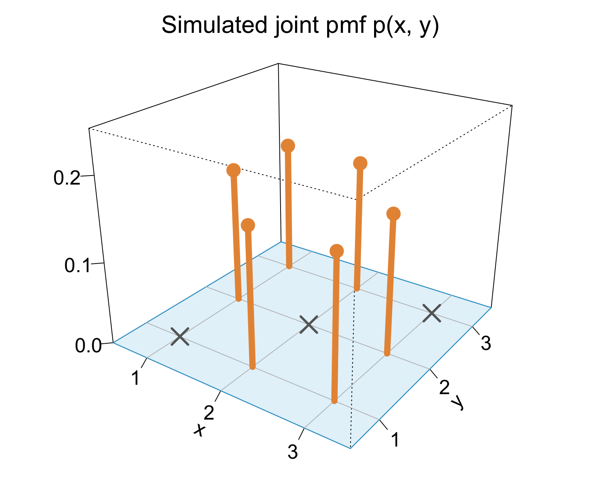
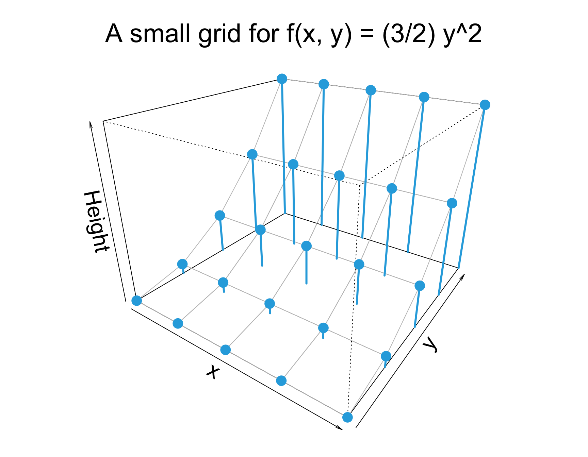
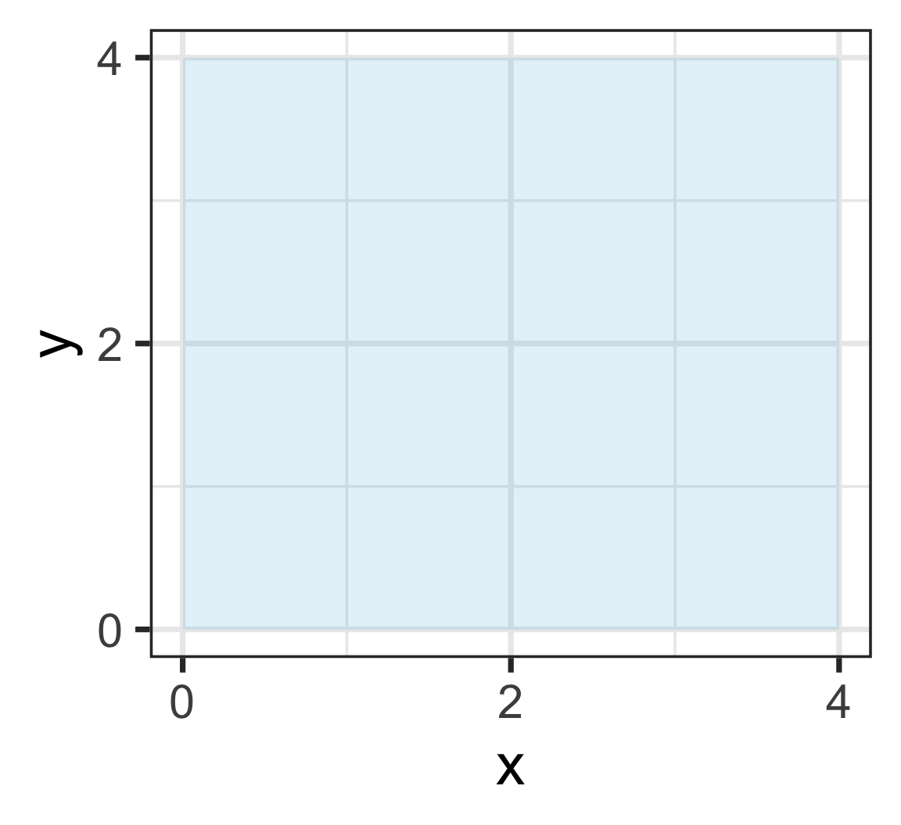
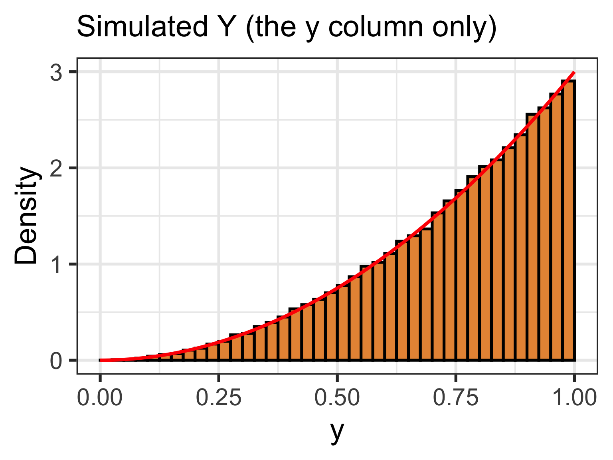
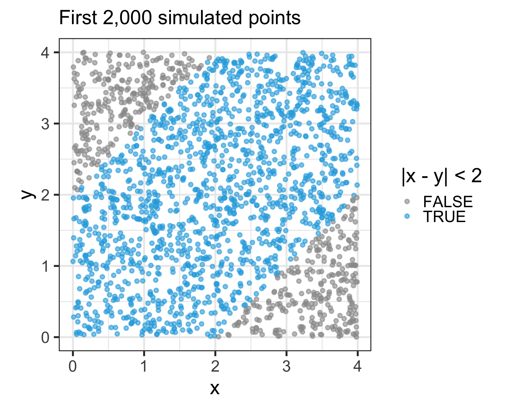
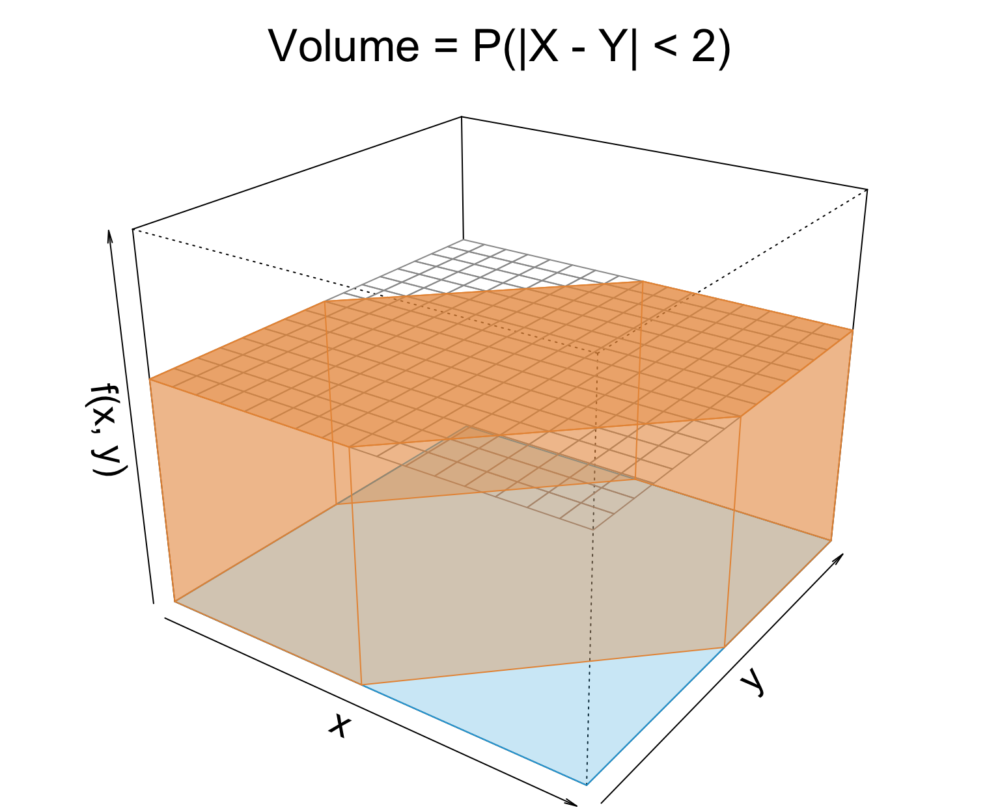
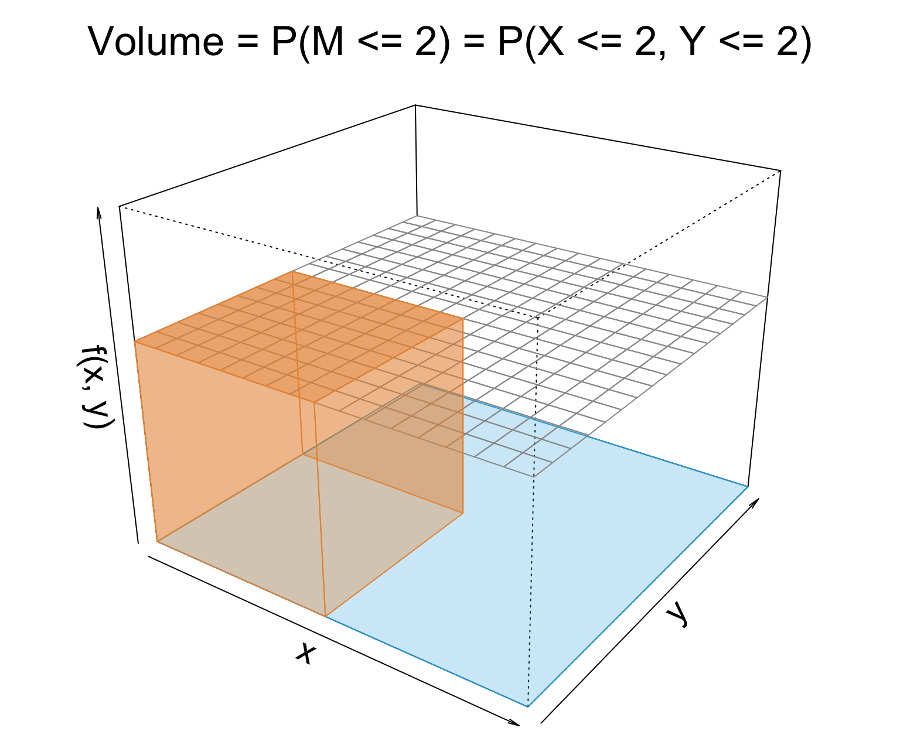
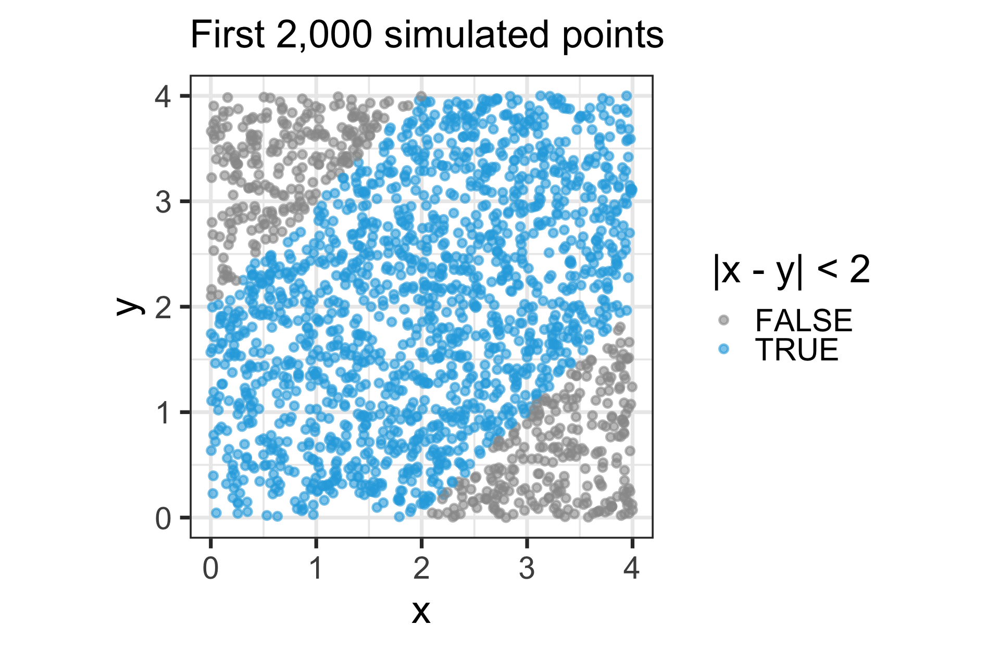
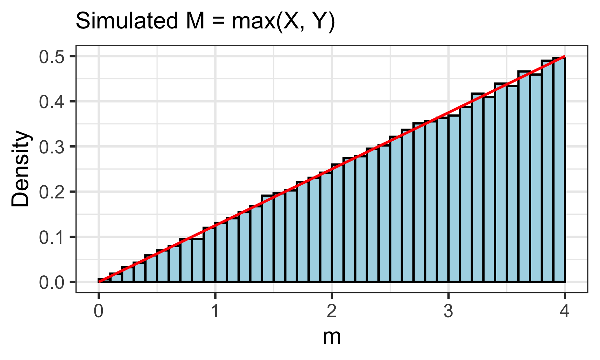

- 1
- Set the random seed once, so we get the same simulation every time.
- 2
-
Save the number of simulations as
reps, so it is easy to change later. - 3
- One row per draw: 2 draws for each of the 100,000 simulations, like in Lesson 2.
- 4
- Work within each simulation separately.
- 5
-
n()is 2 here (two draws per simulation). With noreplace = TRUE,sample()draws without replacement, so the two balls are different, just like the box. - 6
-
One row per simulation:
first()is the first ball drawn (\(X\)) andlast()is the second (\(Y\)).
Lesson 15: Joint distributions
Nicky Wakim
2026-11-18
Learning Objectives
Define joint and marginal distributions (pmf’s, pdf’s, and CDF’s) for discrete and continuous random variables
Find and simulate joint and marginal probabilities and pmf’s for discrete random variables
Use simulation to approximate joint and marginal probabilities and pdf’s for continuous random variables
Use simulation to approximate the distribution of a transformation of two random variables
Use simulation to approximate expected values from a joint distribution
Where are we?

New R functions in this lesson
| Function | What it does | First used |
|---|---|---|
first(), last() |
The first or last value in each group | Example 1 |
slice_sample() |
Draws whole rows from a table; weight_by makes some rows more likely |
2D grid sampling |
pmax() |
The larger value in each row of two columns | Example 3 |
Learning Objectives
- Define joint and marginal distributions (pmf’s, pdf’s, and CDF’s) for discrete and continuous random variables
Find and simulate joint and marginal probabilities and pmf’s for discrete random variables
Use simulation to approximate joint and marginal probabilities and pdf’s for continuous random variables
Use simulation to approximate the distribution of a transformation of two random variables
Use simulation to approximate expected values from a joint distribution
What is a joint distribution?
Definition: joint pmf
The joint pmf of a pair of discrete RV’s \(X\) and \(Y\) is \[\begin{aligned} p_{X,Y}(x,y) = & \mathbb{P}(X=x \cap Y=y) \\ = & \mathbb{P}(X=x, Y=y) \end{aligned}\]
Definition: joint pdf
The joint pdf for two continuous RVs (\(X\) and \(Y\)) is \(f_{X,Y}(x,y)\), such that we have the following joint probability: \[\begin{aligned} \mathbb{P}(a \leq X \leq b, & c \leq Y \leq d) = \\ & \int_a^b \int_c^d f_{X,Y}(x,y)dydx \end{aligned}\]
Important properties of joint distributions
Properties of joint pmf’s
A joint pmf \(p_{X,Y}(x,y)\) must satisfy the following properties:
- \(0 \leq p_{X,Y}(x,y) \leq 1\) for all \(x, y\)
- \(\sum \limits_{\{all\ x\}} \sum \limits_{\{all\ y\}} p_{X,Y}(x,y)=1\)
Properties of joint pdf’s
A joint pdf \(f_{X,Y}(x,y)\) must satisfy the following properties:
- \(f_{X,Y}(x,y)\geq 0\) for all \(x,y\)
- \(\displaystyle\int_{-\infty}^{\infty}\displaystyle\int_{-\infty}^{\infty} f_{X,Y}(x,y)dxdy=1\)
- Remember that \(f_{X,Y}(x,y)\neq \mathbb{P}(X=x, Y=y)\)!!!
Marginal distributions
Marginal pmf’s
Suppose \(X\) and \(Y\) are discrete RV’s, with joint pmf \(p_{X,Y}(x,y)\). Then the marginal probability mass functions are
\[p_X(x) = \sum \limits_{\{all\ y\}} p_{X,Y}(x,y)\]
\[p_Y(y) = \sum \limits_{\{all\ x\}} p_{X,Y}(x,y)\]
Marginal pdf’s
Suppose \(X\) and \(Y\) are continuous RV’s, with joint pdf \(f_{X,Y}(x,y)\). Then the marginal probability density functions are \[\begin{aligned} f_X(x)&= \int_{-\infty}^{\infty} f_{X,Y}(x,y)dy\\ f_Y(y)&= \int_{-\infty}^{\infty} f_{X,Y}(x,y)dx \end{aligned}\]
Joint cumulative distribution functions (CDFs)
Joint CDF for discrete RVs
The joint CDF of a pair of discrete RV’s \(X\) and \(Y\) is \[\begin{aligned} F_{X,Y}(x,y) = &\mathbb{P}(X \leq x\ and\ Y \leq y) \\ = &\mathbb{P}(X \leq x, Y \leq y) \end{aligned}\]
Joint CDF for continuous RVs
The joint CDF of continuous random variables \(X\) and \(Y\), is the function \(F_{X,Y}(x,y)\), such that for all real values of \(x\) and \(y\), \[\begin{aligned} F_{X,Y}(x,y)= \mathbb{P}(X \leq x, & Y \leq y) = \\ & \int_{-\infty}^x\int_{-\infty}^y f_{X,Y}(s,t)dtds \end{aligned}\]
Learning Objectives
- Define joint and marginal distributions (pmf’s, pdf’s, and CDF’s) for discrete and continuous random variables
- Find and simulate joint and marginal probabilities and pmf’s for discrete random variables
Use simulation to approximate joint and marginal probabilities and pdf’s for continuous random variables
Use simulation to approximate the distribution of a transformation of two random variables
Use simulation to approximate expected values from a joint distribution
Joint distribution for two discrete random variables (1/6)
Example 1
Let \(X\) and \(Y\) be two random draws from a box containing balls labelled 1, 2, and 3 without replacement.
Find \(p_{X,Y}(x,y)\)
Find \(\mathbb{P}(X+Y=3)\)
Find \(\mathbb{P}(Y = 1)\)
Find \(\mathbb{P}(Y \leq 2)\)
Joint distribution for two discrete random variables (2/6)
Example 1
Let \(X\) and \(Y\) be two random draws from a box containing balls labelled 1, 2, and 3 without replacement.
Find \(p_{X,Y}(x,y)\)
Find \(\mathbb{P}(X+Y=3)\)

Joint distribution for two discrete random variables (3/6)
Example 1
Let \(X\) and \(Y\) be two random draws from a box containing balls labelled 1, 2, and 3 without replacement.
Find \(\mathbb{P}(Y = 1)\)
Find \(\mathbb{P}(Y \leq 2)\)
Joint distribution for two discrete random variables (4/6): simulate
- Check the joint pmf with simulation: draw two balls from the box, many times.
- 7
- One group for each pair \((x, y)\) that showed up in the simulations.
- 8
-
n()counts the simulations in each group. Dividing byrepsgives relative frequencies: this approximates the joint pmf..groups = "drop"removes the grouping when we are done.
# A tibble: 6 × 3
x y prob
<int> <int> <dbl>
1 1 2 0.167
2 1 3 0.166
3 2 1 0.166
4 2 3 0.166
5 3 1 0.168
6 3 2 0.167Pairs like \((1, 1)\) never show up,
so \(p_{X,Y}(1,1) = 0\)
Joint distribution for two discrete random variables (5/6): 3D picture
- Picture the simulated joint pmf in 3D.
- Each stick stands on one pair \((x, y)\). Its height is the simulated \(p_{X,Y}(x,y) \approx \frac16\)
- The \(\times\) marks \((1, 1)\), \((2, 2)\), and \((3, 3)\): height 0, because we can’t draw the same ball twice
- The heights add up to 1: the discrete version of “total volume = 1” for a joint pdf

Joint distribution for two discrete random variables (6/6): simulate
Parts 2 to 4: check \(\mathbb{P}(X+Y=3)\), \(\mathbb{P}(Y = 1)\), and \(\mathbb{P}(Y \leq 2)\) with simulation.
- 1
-
Reuse the 100,000 simulated pairs.
mean()of aTRUE/FALSEcondition is the proportion of simulations where it isTRUE: this approximates \(\mathbb{P}(X+Y=3)\). - 2
-
Marginal probabilities only use the
ycolumn.
# A tibble: 1 × 3
prob_sum_3 prob_Y_1 prob_Y_le_2
<dbl> <dbl> <dbl>
1 0.333 0.334 0.668For reference, the exact answers are \(p_{X,Y}(x,y) = \frac16 \approx 0.1667\) for each possible pair, \(\mathbb{P}(X+Y=3) = \mathbb{P}(Y=1) = \frac13\), and \(\mathbb{P}(Y \leq 2) = \frac23\)
Learning Objectives
Define joint and marginal distributions (pmf’s, pdf’s, and CDF’s) for discrete and continuous random variables
Find and simulate joint and marginal probabilities and pmf’s for discrete random variables
- Use simulation to approximate joint and marginal probabilities and pdf’s for continuous random variables
Use simulation to approximate the distribution of a transformation of two random variables
Use simulation to approximate expected values from a joint distribution
Our main tool for joint distributions: simulate pairs
The simulation method for joint distributions
To learn about \(X\) and \(Y\) with joint pdf \(f_{X,Y}(x,y)\):
Possible values: Draw the region where \(f_{X,Y}(x,y) > 0\)
Simulate: Simulate many pairs \((x, y)\): one row per simulation, with an
xcolumn and aycolumnSummarize:
- Joint probabilities:
mean(x <= 1 & y <= 0.5)approximates \(\mathbb{P}(X \leq 1, Y \leq 0.5)\) - Marginal distribution of \(X\): use only the
xcolumn (histogram ofx)
- Joint probabilities:
- Same simulation method as Lesson 14, now with two columns
- Most joint pdfs have no
r*()function, so we use grid sampling from Lesson 14, in 2D (next slide)
2D grid sampling: the steps
- Same idea as Lesson 14: a box of tickets, where tickets in taller parts of the pdf are more likely to be drawn
- Now each ticket is a point \((x, y)\)
Find the possible values of \((X, Y)\): the region where \(f_{X,Y}(x,y) > 0\)
Make a grid: many evenly spaced points that cover the region, made with
expand_grid(). Each point is a ticket in the boxFind the joint pdf’s height at each ticket
Draw many tickets with replacement:
slice_sample()draws whole rows (points). Each draw is one simulated pair \((x, y)\)- Each ticket has a chance of being drawn proportional to its height
Check: the simulated points should pile up where the pdf is tall

Each stick is a ticket: taller sticks are more likely to be drawn
Example 2: Joint pdf (1/3)
Example 2: Joint pdf on a rectangle
Let \(f_{X,Y}(x,y)= \frac32 y^2\), for \(0 \leq x \leq 2, \ 0 \leq y \leq 1\).
- Shade the event \(\{0 \leq X \leq 1, 0 \leq Y \leq \frac12\}\). Approximate its probability with simulation.
- Use simulation to look at the marginal distributions of \(X\) and \(Y\).

Example 2: Joint pdf (2/3): simulate
- Shade the event \(\{0 \leq X \leq 1, 0 \leq Y \leq \frac12\}\). Approximate its probability with simulation.
- 1
-
Steps 1 and 2:
expand_grid()makes every combination of 1,001 values of \(x\) and 1,001 values of \(y\): about 1 million tickets covering the rectangle. - 2
- Step 3: the joint pdf’s height at each ticket.
- 3
-
Step 4:
slice_sample()drawsrepsrows from the grid, with replacement. Each row drawn is one simulated pair \((x, y)\). - 4
-
weight_bygives each ticket the pdf’s height, so taller tickets are more likely to be drawn. It works likeprobinsample(). - 5
-
&means “and”: both conditions must beTRUE. The proportion approximates \(\mathbb{P}(0 \leq X \leq 1, 0 \leq Y \leq \frac12)\).
# A tibble: 1 × 1
prob
<dbl>
1 0.0623For reference, the exact answer is \(\mathbb{P}(0 \leq X \leq 1, 0 \leq Y \leq \frac12) = \frac{1}{16} = 0.0625\)
- The volume under \(f_{X,Y}(x,y)\) over the event is the probability (the double integral in the definition)
- The simulation counts the proportion of points that land in the event instead
Example 2: Joint pdf (3/3): marginals
- Use simulation to look at the marginal distributions of \(X\) and \(Y\).

Rotate this plot (interactive) ↗
- Marginal of \(X\): squash the volume onto the \(x\) axis (add up over \(y\))
- Marginal of \(Y\): squash it onto the \(y\) axis
Plot code
ggplot(ex2_sims, aes(x = x)) +
geom_histogram(aes(y = after_stat(density)),
binwidth = 0.05, boundary = 0,
color = "black", fill = "lightblue") +
geom_function(fun = function(x) 1/2 + 0 * x,
xlim = c(0, 2),
color = "red", linewidth = 1.5) +
labs(subtitle = "Simulated X (the x column only)",
x = "x", y = "Density")- 1
-
Histogram of only the
xcolumn, scaled like a pdf. Ignoringygives the marginal distribution of \(X\). - 2
-
For reference, the marginal pdf \(f_X(x) = \frac12\) for \(0 \leq x \leq 2\), in red. (
0 * xkeeps the line flat.) - 3
- Add a subtitle and axis labels.

- \(X\) is flat: Uniform\([0, 2]\)
Plot code
ggplot(ex2_sims, aes(x = y)) +
geom_histogram(aes(y = after_stat(density)),
binwidth = 0.025, boundary = 0,
color = "black", fill = "#E89543") +
geom_function(fun = function(y) 3 * y^2,
xlim = c(0, 1),
color = "red", linewidth = 1.5) +
labs(subtitle = "Simulated Y (the y column only)",
x = "y", y = "Density")- 1
-
Histogram of only the
ycolumn: the marginal distribution of \(Y\). - 2
- For reference, the marginal pdf \(f_Y(y) = 3y^2\) for \(0 \leq y \leq 1\), in red.
- 3
- Add a subtitle and axis labels.

- \(Y\) piles up near 1, where the joint pdf is tallest
Learning Objectives
Define joint and marginal distributions (pmf’s, pdf’s, and CDF’s) for discrete and continuous random variables
Find and simulate joint and marginal probabilities and pmf’s for discrete random variables
Use simulation to approximate joint and marginal probabilities and pdf’s for continuous random variables
- Use simulation to approximate the distribution of a transformation of two random variables
- Use simulation to approximate expected values from a joint distribution
Recall: simulate, transform, summarize (Lesson 14)
Let \(M\) be a transformation of \(X\) and \(Y\): \(M = g(X, Y)\)
\(M\) is a random variable, so it has a distribution
We use the same simulation method as Lesson 14, now with two columns:
Possible values: Find the possible values of \(M\) from the region where \(f_{X,Y}(x, y) > 0\)
Simulate: Simulate many pairs \((x, y)\)
Transform: Apply \(g\) to every simulated pair:
mutate(m = g(x, y))Summarize:
mean(m <= c)approximates \(\mathbb{P}(M \leq c)\), and a histogram ofmshows its shape
- Rewriting an event about \(M\) as a region of \((x, y)\) points checks the simulation, and gives an exact answer when the density is constant (area \(\times\) height)
Example of a joint pdf with a transformation (1/5)
Example 3: Constant density on a square
Let \(X\) and \(Y\) have constant density on the square \(0 \leq X \leq 4, 0 \leq Y \leq 4\).
- Shade the event \(|X-Y| < 2\). Find \(\mathbb{P}(|X-Y| < 2)\) using areas, and check it with simulation.

Example of a joint pdf with a transformation (2/5): the event as a volume
- Shade the event \(|X-Y| < 2\). Find \(\mathbb{P}(|X-Y| < 2)\) using areas.

- Area of the event: \(16 - 2 \cdot \frac12 \cdot 2 \cdot 2 = 12\)

Rotate this plot (interactive) ↗
- Volume = area \(\times\) height \(= 12 \cdot \frac{1}{16} = \frac34\)
Example of a joint pdf with a transformation (3/5): simulate
- Shade the event \(|X-Y| < 2\). Find \(\mathbb{P}(|X-Y| < 2)\) using areas, and check it with simulation.
- 1
- Steps 1 and 2 of 2D grid sampling: a grid of about 1 million tickets covering the square.
- 2
- Step 3: the joint pdf’s height at each ticket. The density is constant, so every ticket has the same height, \(\frac{1}{16}\).
- 3
-
Step 4: draw
repstickets, weighted by height, like Example 2. Equal heights mean every ticket is equally likely. - 4
-
abs()is the absolute value. The proportion of simulations with \(|X - Y| < 2\) approximates the probability.
# A tibble: 1 × 1
prob
<dbl>
1 0.748Plot code
- 5
- Plot only the first 2,000 simulated pairs, so the points don’t cover each other.
- 6
- One point per simulated pair, colored by whether it is in the event.
- 7
-
Grey for
FALSE, blue forTRUE. - 8
- Make the square look like a square.
- 9
- Add a subtitle and labels.

For reference, the exact answer is \(\mathbb{P}(|X-Y| < 2) = \frac34 = 0.75\) (previous slide)
Example of a joint pdf with a transformation (4/5)
Example 3: Constant density on a square
Let \(X\) and \(Y\) have constant density on the square \(0 \leq X \leq 4, 0 \leq Y \leq 4\).
- Let \(M = \max(X,Y)\). What are the possible values of \(M\)? Shade the event \(M \leq 2\) and find \(\mathbb{P}(M \leq 2)\) using areas.
Example of a joint pdf with a transformation (5/5): simulate
- Let \(M = \max(X,Y)\). Check \(\mathbb{P}(M \leq 2)\) with simulation, and look at the distribution of \(M\).
- 1
- Reuse the 100,000 simulated pairs from part 1.
- 2
-
The transformation:
pmax()takes the larger ofxandyin each row. (max()would give one number: the largest value in the whole column!) - 3
- The proportion of simulations with \(M \leq 2\) approximates \(\mathbb{P}(M \leq 2)\).
# A tibble: 1 × 1
prob_M
<dbl>
1 0.249For reference, the exact answer is \(\mathbb{P}(M \leq 2) = \mathbb{P}(X \leq 2, Y \leq 2) = \frac{2 \cdot 2}{16} = \frac14\)
Plot code
ggplot(ex3_sims, aes(x = m)) +
geom_histogram(aes(y = after_stat(density)),
binwidth = 0.1, boundary = 0,
color = "black", fill = "lightblue") +
geom_function(fun = function(m) m / 8,
xlim = c(0, 4),
color = "red", linewidth = 1.5) +
labs(subtitle = "Simulated M = max(X, Y)",
x = "m", y = "Density")- 4
- Histogram of the simulated values of \(M\), scaled like a pdf.
- 5
- For reference, the pdf of \(M\) in red: \(f_M(m) = \frac{m}{8}\) for \(0 \leq m \leq 4\). The histogram follows it.
- 6
- Add a subtitle and axis labels.

- \(X\) and \(Y\) are flat, but \(M\) is not: the larger of two values is more likely to be big
Learning Objectives
Define joint and marginal distributions (pmf’s, pdf’s, and CDF’s) for discrete and continuous random variables
Find and simulate joint and marginal probabilities and pmf’s for discrete random variables
Use simulation to approximate joint and marginal probabilities and pdf’s for continuous random variables
Use simulation to approximate the distribution of a transformation of two random variables
- Use simulation to approximate expected values from a joint distribution
Expected value of one RV from joint pdf
If you have a joint distribution \(f_{X,Y}(x,y)\) and want to calculate \(\mathbb{E}[X]\), you have two options:
Find \(f_X(x)\) and use it to calculate \(\mathbb{E}[X]\).
Calculate \(\mathbb{E}[X]\) using the joint density: \[\mathbb{E}[X] = \int_{-\infty}^{\infty}\int_{-\infty}^{\infty}x f_{X,Y}(x,y)dydx.\]
You can do the same for \(\mathbb{E}[Y]\)!
- With simulation, there is a third option: simulate pairs \((x, y)\), then
mean(x)approximates \(\mathbb{E}[X]\). No integral needed!
Example 4: Expected value from a joint pdf (1/2)
Example 4: Expected value from a joint pdf
Let \(f_{X,Y}(x,y)= 2e^{-(x+y)}\), for \(0 \leq x \leq y\). Approximate \(\mathbb{E}[X]\) and \(\mathbb{E}[Y]\) with simulation.
- Possible values: \(0 \leq x \leq y\), with no upper limit, but \(f_{X,Y}(x,y)\) is almost 0 once \(y\) is past 10, so our grid can stop at 10

Example 4: Expected value from a joint pdf (2/2): simulate
Let \(f_{X,Y}(x,y)= 2e^{-(x+y)}\), for \(0 \leq x \leq y\). Approximate \(\mathbb{E}[X]\) and \(\mathbb{E}[Y]\) with simulation.
- 1
- Make a grid of tickets from 0 to 10 in both directions.
- 2
- Keep only the possible values, where \(x \leq y\): a triangle.
- 3
- The joint pdf’s height at each ticket.
- 4
-
Draw
repstickets, weighted by height, like Example 2.
- 5
-
The averages of the
xandycolumns approximate \(\mathbb{E}[X]\) and \(\mathbb{E}[Y]\).
# A tibble: 1 × 2
avg_X avg_Y
<dbl> <dbl>
1 0.493 1.50For reference, the exact answers are \(\mathbb{E}[X] = \frac12\) and \(\mathbb{E}[Y] = \frac32\)
mean(x + y)would approximate \(\mathbb{E}[X + Y]\): transform first, then average
Summary of joint distributions
| Discrete \(X\) and \(Y\) | Continuous \(X\) and \(Y\) | |
|---|---|---|
| Joint distribution | joint pmf: \(p_{X,Y}(x,y) = \mathbb{P}(X=x, Y=y)\) | joint pdf \(f_{X,Y}(x,y)\): probabilities are volumes (double integrals) |
| Marginal distribution | sum the joint pmf over the other variable | integrate the joint pdf over the other variable |
| Simulate pairs with | sample(), like the box |
2D grid sampling from the joint pdf |
| Summarize | group_by(x, y), mean(...) |
mean(...), histogram of one column |
- The joint distribution describes \(X\) and \(Y\) together; a marginal distribution describes one of them alone
- With simulation: joint probabilities use both columns, marginals use one column, and transformations add a new column with
mutate()
Lesson 15 Slides